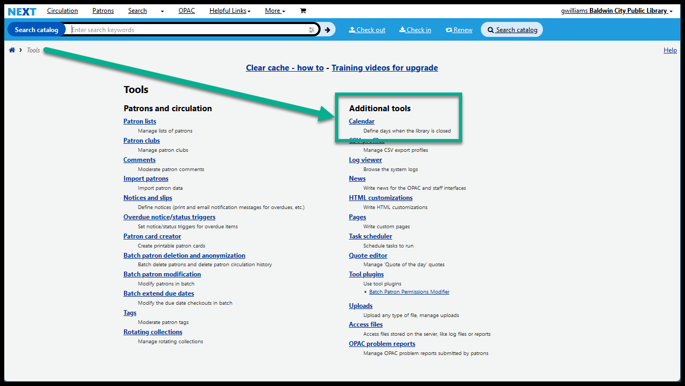

Calendar - introduction, tips, problems
The calendar in Next Search Catalog allows you to set dates that your library is closed.
Adding closures to your library’s calendar allows Next Search Catalog to automatically set due dates based on the days your library is open or closed. If you calendar is set to be closed every Thursday, for example, no items checked out at your library will be due on Thursdays. If you calendar is set to be closed on July 4, no items will be due on July 4. Any time that an item is checked out, the calendar ensures that items will not be due on days that are marked as closed dates or holidays on your library’s calendar. If an item would normally be due on a closed date, the due date will be pushed to the next day your library is open.
The calendar affects due dates and late fees.
Finding the calendar tool
On the home page click on “Tools”

In the right hand column, click on “Calendar”

Things to note
- Only staff with library director permission can access the Calendar tool
- See more about director permissions on the Staff account types page
- If you cannot currently log into your director account, click here for the password reset instructions
- You can only set closures and holidays for your library
- There are exceptions for the Doniphan County Library District and the Prairie Hills School District
- Only staff at the Doniphan County Library District and the Prairie Hills School District can use the “Copy” feature
- You can see past closure dates in the “Unique holidays” area by clicking the “Show past entries” checkbox
- “Titles” are required - you must give your closed dates a title
- “Descriptions” are optional
- Next Search Catalog will automatically record your username, library, the date, and the time in the “Description” field when you create a holiday and add that to the end of any information you’ve put in the “Description” field
- You cannot set closures for holidays that “Float”
- i.e. You cannot set holidays for “The first Monday in September” or “The third Monday in January” - you must specify a date
Calendar - introduction, tips, and limitations: Video on YouTube
Watch “Calendar - introduction, tips, problems” on YouTube
Go directly to the video on YouTube https://youtu.be/FB8BeOTZ6LY